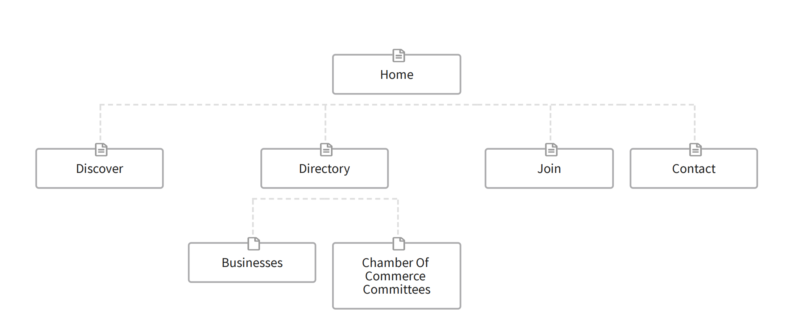

Chilliwack Chamber of Commerce
Site Purpose:
The purpose of this site is to connect businesses in the community with other businesses and customers. This is intended as both a marketing tool and a resource for building businesses in the area. This site will service businesses located in Chilliwack, and the surrounding areas such as Greendale, Vedder, and Rosedale. It will also connect with other chamber of commerce sites in the Fraser Valley as businesses, users, and customers in our area can live and work in more then one community. This site will highlight the benifits that the chamber of commerce can bring to individual businesses and point out the benifits of the Chilliwack area.
Site Map:
